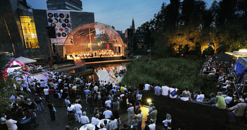

Muziek op de Dommel 2011: 4 juni

Na het succes van Muziek op de Dommel 2010 treft u hier binnenkort meer informatie aan over de toekomst van Muziek op de Dommel in 2011. Stuur een e-mail naar als u ook per e-mail op de hoogte wilt worden gehouden.
Deelnemen in 2011?
Inschrijven voor de editie in 2011 kan via .
Muziek op de Dommel op Youtube
Foto's van ModD 2010
Op zaterdag 5 juni klonk er de hele middag en avond muziek in de binnenstad van Eindhoven. Koren en orkesten uit Eindhoven en omgeving lieten van zich horen, op een unieke locatie - op het water! - op de Dommel bij het Van Abbemuseum. Heel Eindhoven genoot van prachtige muziek.
Bekijk op de fotopagina de eerste foto's van het festival.